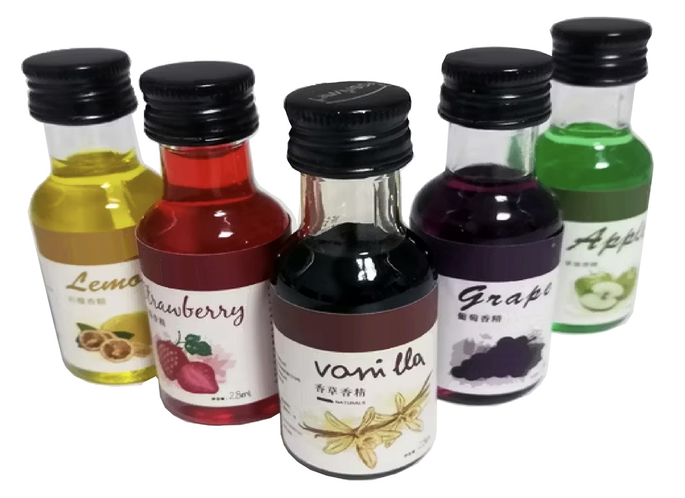

Food and Human Nutrition
Form Two

Figure 1.3: Food flavourings
Activity 1.2
Identifying different categories of food additives
Visit a supermarket, mall or market and observe labelling information on pre- packed foods.
(i) Examine the food additives shown on the labels.
(ii) Explore the food additives that are commonly observed in the labels and name the food products in which they are mostly found.
Seasonings and condiments
Seasonings and condiments are also added to foods to play the same roles as flavourings in foods.
Seasonings: These are ingredients added to food to improve the flavour. They are usually used during cooking and processing. The commonly used seasonings include salt, spices and herbs.
Spices: These are aromatic parts of plants which include roots, barks, leaves, flowers and seeds. They have distinctive aroma and pungent flavours. They are added to foods to improve flavour, aroma and appearance. Most of them are used in whole or ground form. All spices should be stored in airtight containers to prevent flavour loss. Table 1.1 exemplifies commonly used spices, their descriptions, and dishes to which they can be added.